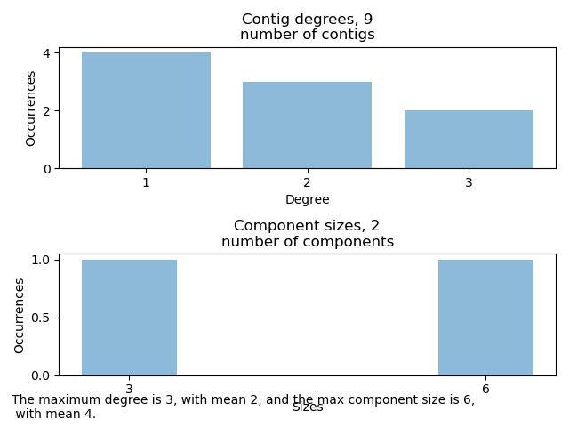

Yesterday I attempted to run my code on the real data, however some problems cropped up quite quickly. The program returned with a OutOfMemoryError with a warning that the GC overhead limit was exceeded, indicating that a memory leak is occurring in the program. Some investigating showed that this was caused by the getComponents method of GenomeGraph.
After fixing this problem by changing to a recursive DFS algorithm another error appeared, when running the problem on the original file. This time it was a StackOverFlowError , thrown when too many (according to he JVM) recursive function calls where made. A solution to that, in this case when we know that the algorithm won't run forever, is to include the flag -Xss4g on the command line so increase the stack size.
Secondly, some updates had to be made to the Python script to display the results in an appealing and informative way. As it turns out, both the contig degrees and the sizes of the components are massively centered around smaller values, below 10, but there are also quite many with significantly larger values. This resulted in great difficulty displaying the information. I chose to only display plots with values less than 20, but to also include some information about the mean and larger values.
So in conclusion, to run the whole analysis on a data file with the original format: first run the datatrim jar-file on the data, then gun genomeio on the resulting file, and pipe the results to the DisplayData script. For example:
-Xss4g -Xmx4g -jar genomeio.jar trim_t02.txt | python DisplayData.py
returns the file
9 1 1 2 1 2 2 3 3 1 2 6 3
and prints the graph 
Similarly, running the command
java -Xss4g -Xmx4g -jar genomeio.jar trim_Spruce_fingerprint_2017-03-10_16.48.olp.m4 | python DisplayData.py
yields the plot
 Interestingly, the running time is quite fast for this command:
Interestingly, the running time is quite fast for this command:
time java -Xss4g -Xmx4g -jar genomeio.jar trim_Spruce_fingerprint_2017-03-10_16.48.olp.m4 | python DisplayData.py
prints
real 1m20,392s user 3m35,831s sys 0m2,269s
Other than these updates, I have now commented the code properly, and I believe it is time to write the report tomorrow.